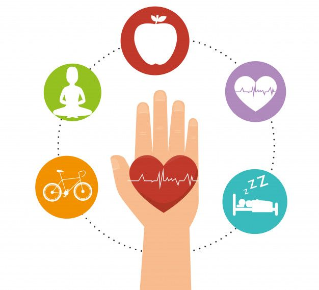
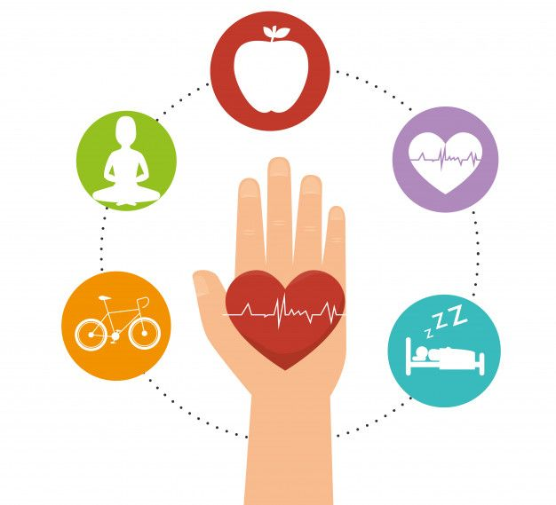

Sobre el ODS 3
Garantizar una vida sana y promover el bienestar para todas las edades es el corazón del ODS 3.
Busca mejorar la salud global, reducir enfermedades y fortalecer sistemas sanitarios accesibles.
Garantizar una vida sana y promover el bienestar para todas las edades es el corazón del ODS 3.
Busca mejorar la salud global, reducir enfermedades y fortalecer sistemas sanitarios accesibles.
